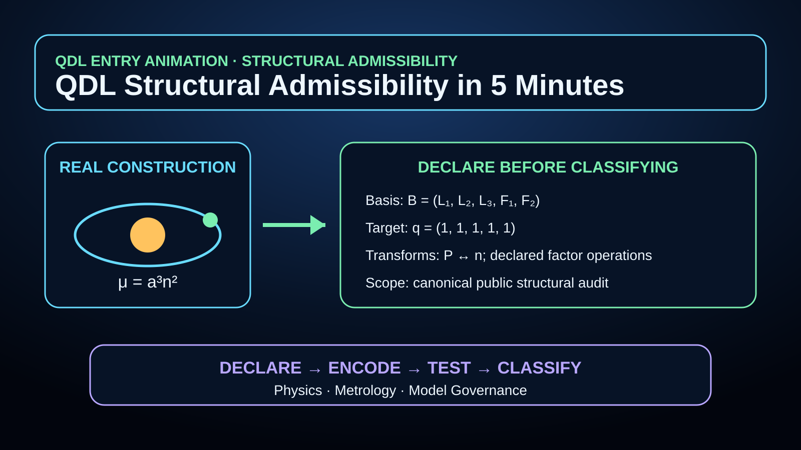

QDL in 5 Minutes
The Quantized Dimensional Ledger is a proposed structural-admissibility framework for physics, metrology, and model governance. Its simplest public picture is the QDL Lattice: space is modeled not as absolute emptiness, but as a closure-compatible lattice of recurrence.
In this picture, particles are persistent localized modes of that same structure, composite particles are confined multi-channel modes, and geometry is investigated as a possible large-scale response of collective closure stress. The current flagship synthesis is the monograph Physical Law as the Minimal Architecture of Persistence Under Closure.

Animated Introduction: How QDL Works
Begin with the structural-admissibility method before entering the substrate worldview.

QDL Structural Admissibility in 5 Minutes
A real orbital construction is converted into a five-slot ledger vector only after the basis, target, allowed transforms, and scope have been declared. The animation then compares admissible and non-admissible vectors and shows why dimensional agreement alone is not enough.
The core picture
QDL models space not as absolute emptiness, but as a closure-compatible QDL Lattice of recurrence. Particles are persistent localized modes of that same structure, and geometry is investigated as a possible large-scale response of collective closure stress.
Claim status This is a substrate interpretation and research architecture. It is not a claim that microscopic lattice cells have already been directly observed, or that spacetime, spin, gravity, and the full particle spectrum have already been completely derived.
1) What problem does QDL address?
Many failures in physics, engineering, standards work, and model-driven systems begin upstream of numerical fitting. A construction may be mathematically writable, computationally convenient, or empirically adjustable while still carrying hidden structural problems: incompatible dimensional assumptions, invalid transformations, silent regime shifts, or loss of measurement meaning.
- Dimensional or unit structure may be treated as bookkeeping rather than as a constraint.
- Models may extrapolate outside the regime where their representations remain physically meaningful.
- Measurement chains may preserve numerical outputs while losing structural traceability.
- Effective theories may contain terms that are syntactically available but require explicit closure auditing.
2) What is the core idea?
QDL treats admissibility as a structural question. Before asking whether a model can be fitted, QDL asks whether the construction is coherent under its own declared dimensional ledger and whether it remains coherent under the transformations, compositions, and interpretations it claims to support.
Core QDL question: Is this construction structurally admissible before we fit, optimize, certify, publish, or deploy it?
This turns dimensional reasoning from a post-hoc consistency check into an upstream filter. In the formal papers, QDL uses lattice structure, closure maps, residual classes, and admissibility-preserving transformations. In plain terms, it asks whether the structure of the representation survives the operations being performed on it.
3) What is the Quantized Dimensional Cell?
The Quantized Dimensional Cell, or QDC, is the proposed closure unit around which QDL organizes dimensional recurrence. In the current QDL program, the Planck-normalized closure cell is represented by the dimensional structure L³F², where length and frequency supply the primitive recurrence axes.
The toroidal QDC papers develop this as a compact closure-space geometry: not as a claim that the universe has already been proven to be literally toroidal, but as a candidate representation for closure-stable recurrence, sector assignment, and residual filtering.
QDC The QDC is the proposed closure cell used to test whether dimensional constructions, operators, thresholds, and physical representations remain admissible across scale and transformation.
4) What is predictive compression?
Predictive compression is the monograph’s main standard for evaluating QDL claims. A theory does not become stronger simply by using one word for many things. It becomes stronger only when a smaller declared structure does real work.
- It determines a consequence not separately inserted.
- It generates several linked consequences from one common input.
- It excludes an otherwise plausible alternative.
- It exposes what remains underdetermined instead of hiding it.
5) What does QDL do in practice?
- Flags structural inadmissibility early before downstream validation work.
- Makes hidden assumptions explicit by forcing the representation to declare its dimensional ledger.
- Clarifies regime boundaries where extrapolation or model transfer becomes structurally risky.
- Audits measurement chains for closure loss across transformations, conversions, and derived quantities.
- Supports EFT and SMEFT review by classifying operator structures through closure-vector and residual logic.
- Separates claim levels so theorem, reconstruction, ansatz, audit, residual, and open-target claims are not confused.
6) Where does QDL currently apply?
The current QDL program is organized around several active application layers.
7) What QDL is not
- Not a replacement for quantum field theory, general relativity, statistics, or experiment.
- Not a claim that all constants, masses, particles, or cosmological parameters have already been derived.
- Not a claim that microscopic QDL Lattice cells have already been directly observed.
- Not a data-fitting method or curve-fitting program.
- Not a declaration that every proposed QDL extension is established physics.
- Not dependent on one dataset, one numerical coincidence, or one speculative interpretation.
8) How should claims be read?
A central discipline of the current QDL program is the use of claim-status firewalls. QDL papers distinguish strict theorem, conditional theorem, restricted minimality theorem, constrained branch, ansatz, audit result, residual diagnostic, conjecture, and future-test target.
Important QDL is strongest where it provides reproducible structural audits, closure rules, admissibility tests, or controlled reconstruction layers. Speculative extensions are marked as conditional or future-test targets.
9) Why might this matter?
If the QDL closure program continues to hold across independent examples, it could strengthen dimensional reasoning from unit consistency into a deeper structural filter on admissible physical representation. That would be useful not only in foundational physics, but also in metrology, model certification, scientific AI, engineering review, and multi-scale simulation.
The near-term test is not whether QDL explains everything. The near-term test is whether it can repeatedly identify, classify, or constrain structures that ordinary dimensional bookkeeping does not make explicit.
Bottom line QDL is a structural-admissibility framework grounded in a closure-first picture of physical persistence. It asks whether a construction is dimensionally and representationally coherent before major effort is invested in fitting, interpretation, certification, or deployment.
For collaboration, review, pilot applications, or technical correspondence, contact james.bourassa@qdlphysics.org.